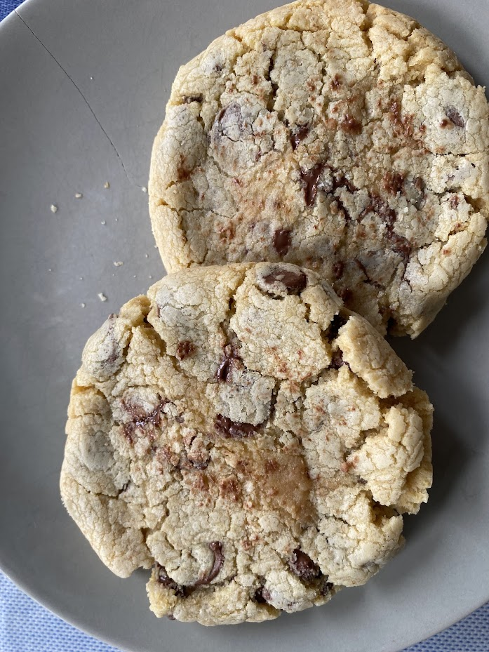
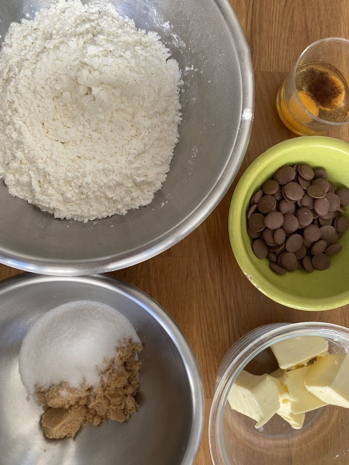

Cookies façon Laura Todd
⏱️ 20 min + repos
🔥 Facile
👥 Environ 17 cookies



Étapes
- Faites fondre les matières grasses (beurre + Crisco/margarine). Ne chauffez pas trop pour éviter de cuire les œufs ensuite.
- Ajoutez les sucres, puis l’œuf entier, le jaune, la vanille et la fleur de sel. Mélangez bien.
- Mélangez la farine, la levure et la maïzena, puis incorporez-les à la préparation. Mélangez.
- Ajoutez les pistoles de chocolat et mélangez à nouveau.
- Laissez reposer la pâte 10 min au réfrigérateur pour faciliter le façonnage.
- Formez des boules bien rondes de 40 g environ. Ne les aplatissez surtout pas.
- Ajoutez quelques pistoles sur le dessus de chaque boule.
- Disposez les cookies en quinconce sur 2 plaques en métal recouvertes de papier cuisson. Placez au congélateur 30 min.
- Préchauffez le four à 170°C chaleur tournante.
- Enfournez la première plaque pour exactement 11 minutes.
- Retirez le papier cuisson de la plaque chaude immédiatement, puis laissez refroidir les cookies sur une grille.
- Faites cuire la deuxième plaque de la même façon.